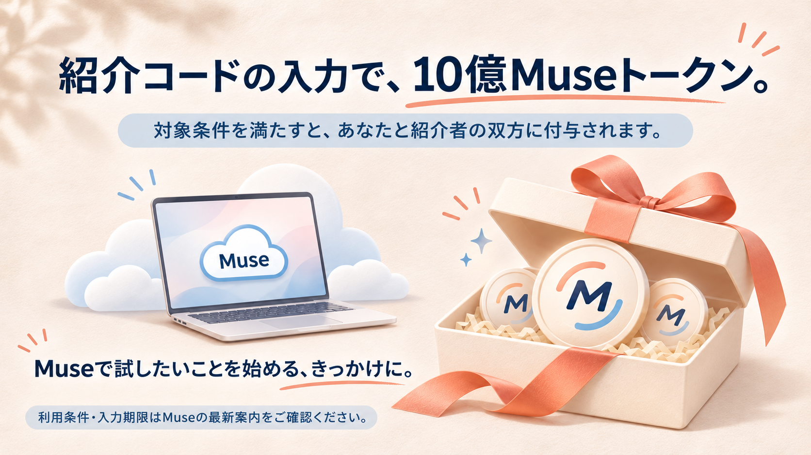
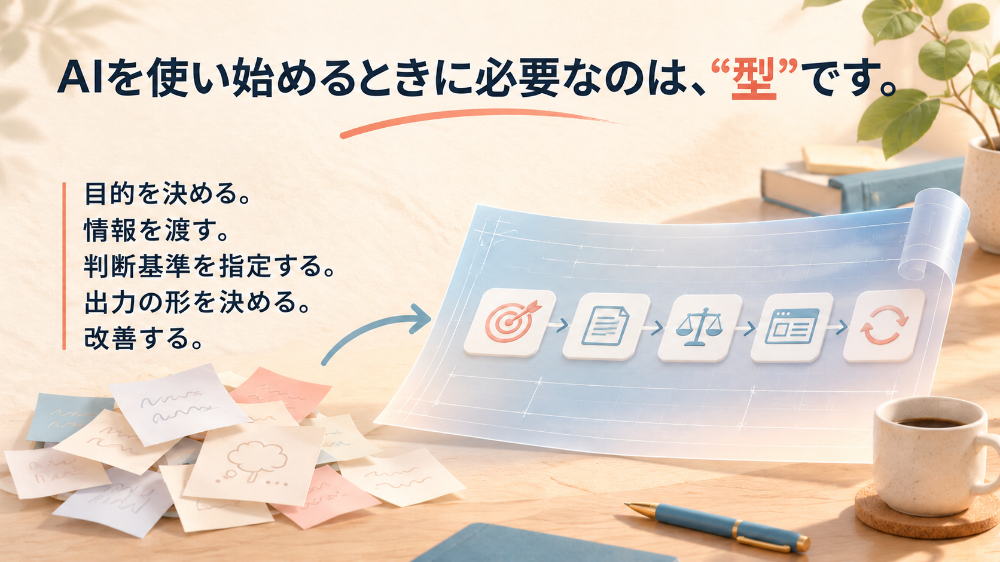
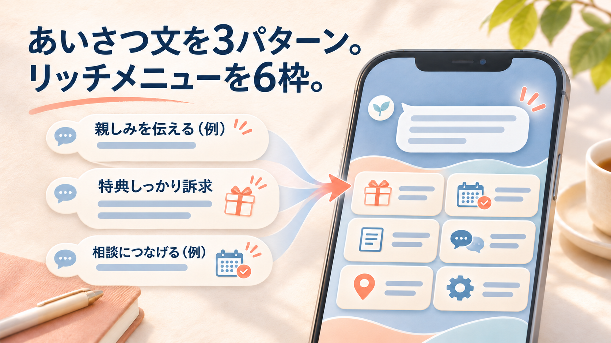
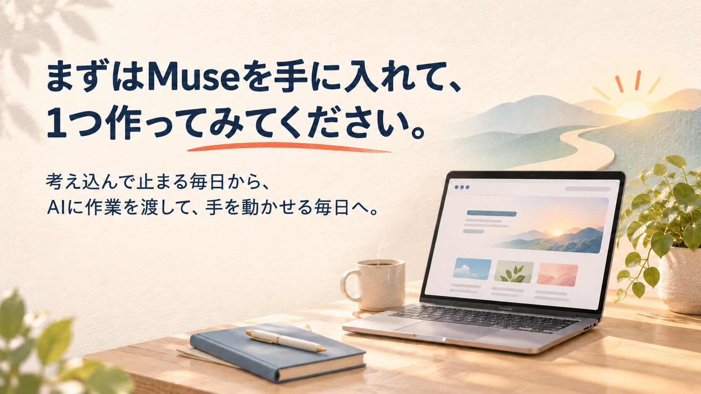
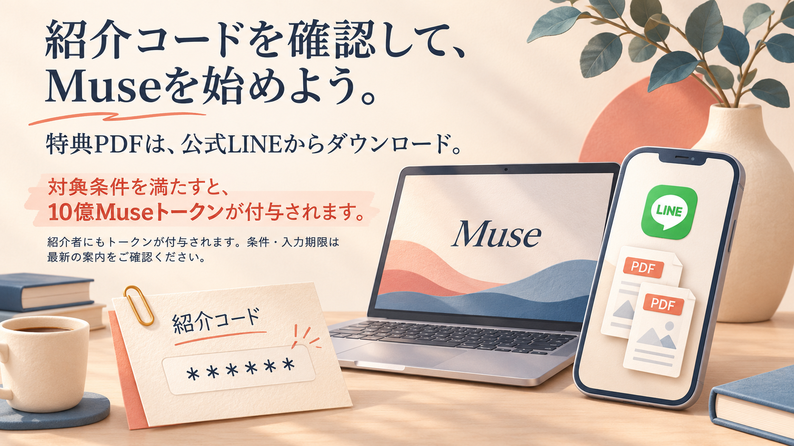

まずはMuseを始めてみる
まず紹介コードを確認し、Museの登録後に設定画面から入力しましょう。
紹介特典は対象条件を満たす場合に適用されます。最新の条件と入力期限はMuseの案内をご確認ください。










Museを始めて、特典を受け取る
紹介コードを確認してMuseに登録。特典PDFは公式LINEからダウンロードできます。
トークン付与と資料の特典にはそれぞれ条件があります。